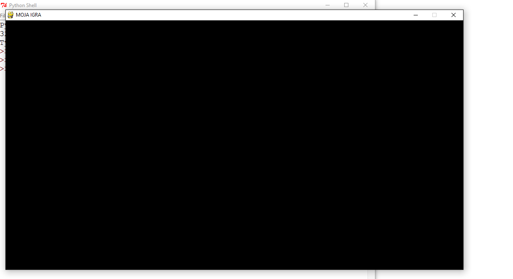
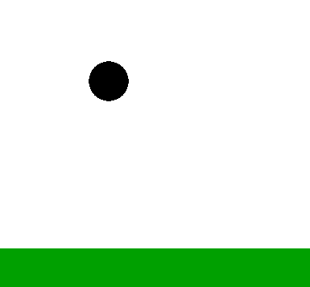

Razvoj igre - Kača
Prva igra, ki se je bomo lotili s pomočjo knjižnice Pygame je igra Kača. Gre za zelo znano, zabavno igro, v kateri vodite kačo po omejenem polju, pri tem pobirate sadeže in skušate kačo pripeljati čim dlje.
Klikni tukaj za ogled videa.
Za začetek si pripravimo ogrodje naše igre. Potrebovali bomo naslednje module:
- modul Pygame
- modul Time
- modul Random
pygame.init() vedno poženemo funkcije iz modula Pygame.
Podobno jih na koncu z ukazom pygame.quit() zaustavimo.
Osnovne barve, ki jih bomo potrebovali, definiramo tu. Barvo zapišemo v obliki nabora RGB.
Hitrost 15 sličic na sekundo bo za to igro dovolj. Nastavimo še privzeto smer kače - desno in pa dimenzije
našega igralnega okna (poljubno).
Sedaj, ko imamo določene dimenzije platna, lahko ustvarimo naše platno z ukazom
display.set_mode(),
ki mu podamo x in y koordinato.
Z ukazom set_caption("niz") poimenujemo igro in naložimo še osnovne elemente, ki jih bomo potrebovali:
- glavo kače
- telo kače
- sadež - jabolko
Če poženemo do sedaj spisan program, dobimo zgolj črno platno izbranih dimenzij. Elementov, ki smo jih naložili, pa ni na vidik. Te bomo prikazali v nadaljevanju.

Preden definiramo glavno funkcijo igra, definirajmo še dve pomožni funkciji. Prva bo služila za izpis besedila, druga pa za izris premika kače.
Pri funkciji za izpis uporabimo ukaz
render na modulu font za oblikovanje
in pa ukaz blit za prikaz besedila na platnu. Pri tem moramo podati, kaj in kam želimo prikazati.
Koordinate veljajo za zgornji levi rob besedila.
Pri funkciji za izris glede na smer(ki je mimogrede globalna spremenljivka, definirana kasneje v objektu), ustrezno zarotiramo glavo naše kače. Uporabimo ukaz
transform.rotate in povemo kaj in za kakšen kot v stopinjah želimo zasuk.
Z ukazom blit prikažemo spremembo na platnu - tako za glavo kot telo kače.
Naša glavna funkcija se imenuje igra. Na začetku definirajmo spremenljivko
smer,
ki ji dodelimo globalno vlogo. Smer bomo namreč potrebovali ves čas pri izrisu v
pomožni, zgoraj definirani funkciji. Potrebujemo še spremenljivki igraIzhod in
igraKonec, ki jih na začetku nastavimo na False. Izberimo velikost kače, v našem
primeru 20, prav tako naj bo tudi velikost jabolka 20.
Shraniti si moramo začetek naše kače. Za lep izgled nastavimo koordinate tako, da kača v celoti poje jabolko. Torej kača lahko v celoti pogoltne jabolko, ali pa jo zgreši. Kača naj začne na sredini platna, seveda ne smemo pozabiti da ti koordinati predstavljata levi zgornji kot, zato jima odštejemo polovico velikosti kače. Koordinate nato delimo z 20, jih zaokrožimo, ter nazaj množimo z 20. Tako sta koordinati zagotovo večkratni 20 (20 je velikost kače).
Naša kača se seveda mora tudi premikati. Hitrost kače razdelimo na hitrost v smeri x in hitrost v smeri y. V začetku naj se kača premika v desno. Hitrost mora biti enaka velikosti, zato da sta koordinati vedno večkratni z njeno velikostjo. V našem primeru je to 20.
Ko bo kača pojedla jabolko, se ji bo povečala dolžina telesa. Priročno je, da ves čas hranimo njeno dolžino, zato jo shranimo v spremenljivko
dolzinaKace. V spremenljivko
seznamKace si shranimo prazen seznam. V ta seznam bomo dodajali nove segmente kače,
ko bo kača pojedla jabolko. Tako ko bomo risali kačo, se bomo sprehodili čez seznam in narisali vsak kos.
Podobno kot koordinate kače si shranimo še koordinate našega jabolka. Pri tem naj bodo koordinate naključne.
Razvoj igre - Žogica
Klikni tukaj za ogled videa.

Najprej uvozimo knjižnico pygame z ukazom
Ker bo naša žogica v nadaljevanju mela več funkcij, je smiselno da sestavimo razred. Zaenkrat naši žogici definiramo le pozicijo središča in njen radij.
Za »glavo« naše aplikacije definiramo novo funkcijo (zogica). Zmislimo si vrednosti, kje bo začetna pozicija naše žogice, ter njen radij. Naredimo tudi novi objekt krogec, ki mu priredimo te vrednosti.
Za glavni del funkcije uporabimo
Za prvi dogodek si poglejmo dogodek QUIT. To je dogodek, ki se zgodi, če uporabnik pritisne na rdeči križec v zgornjem desnem kotu (običajno se tako aplikacijo zapre). Tako lahko z ukazom
Za konec uvodnega dela si poglejmo še ukaze za risanje. Z ukazom
Na koncu zanke uporabimo še ukaz
Ko pridemo iz zanke je lepo da ustavimo vse funkcije, ki smo jih pognali z ukazom
Prenesi me!
Do sedaj smo žogico le narisali, sedaj pa hočemo, da nanjo vpliva gravitacija. Na začetek si shranimo še dve spremenljivki. Spremenljivka
Ker se bo žogica premikala potrebujemo tudi novi spremeljivki za naš objekt(žogico). Shranimo hitrost pod
Gravitacijo je težko določiti, saj računalnik šteje čas drugače kot mi. Za konstantni gravitacijski pospešek je potrebno preizkusiti, kakšna velikost zgleda vredu. Ko bomo
Vsakič ko se požene zanka, je novi trenutek za našo žogico, zato jo pospešimo s funkcijo, ki smo jo definirali v razredu. Ta funkcija samo poveča hitrost žogice. Da spravimo našo žogico v premikajoče stanje, ji moramo spremeniti pozicijo. Ker bo trenutno na našo žogico vplivala samo gravitacija, spreminjamo samo y pozicijo naše žogice. Torej vsak trenutek prištejemo y koortidani njeno hitrost, če bo hitrost večja se bo žogica dlje premaknila.
Prenesi me!

Sedaj imamo žogico na katero vpliva gravitacija. Sedaj dodajmo še tla, ki bodo ustavila našo žogico. Tla naj bodo zelene barve, zato definiramo še eno trojico, ki bo predstavljala zeleno barvo.
Smiselno je, da dodamo metodo k razredu, s katero preverimo ali je žogica že na tleh. Žogica bo na tleh, če bo njena pozicija središča skupaj z radijem večja od pozicije tal. Kot parameter bo metoda dobila pozicijo, kje so tla. Tla bodo v našem primeru predstavljal pravokotnik. Torej če je žogica na tleh bo naša metoda vrnila
Sedaj implementirajmo še našo glavno funkcijo. Najprej preverimo, če je žogica že v območju, kjer so tla. Tla bodo v tem primeru 100 enot od spodnjega roba. Če je žogica na tem območju, ji postavimo hitrost na 0, saj se ne sme premikati, ko je na tleh. Tudi pozicijo ji spremenimo tako, da stoji na tleh, v nasprotnem primeru bi zgledalo kot da se žogica pogrezne v tla.
Tla moramo še narisati. Predstavljal jih bo pravokotnik. Uporabimo ukaz
Prenesi me!

Žogico želimo sedaj še premikati z miško. Za to bomo potrebovali novo metodo v našem razredu. Metoda bo delovala tako, da ko uporabnik klikne z miško, bo preverila, ali smo kliknili na našo žogico. Zato mora metoda dobiti parameter, ki predstavlja pozicijo (x,y) miške. Žogica bo pritisnjena, če bo razdalja od pozicije miške do središča žogice manjša od radija naše žogice. V tem primeru metoda vrne
S prejšnjo metodo smo samo preverili, ali smo kliknili z miško na žogico, sedaj pa potrebujemo še metodo , s katero bomo dobili podatek, kje od središča smo jo prijeli. Potrebovali bomo nove spremenljivke o žogici.
Kot prvo se bo žogica sedaj lahko premikala tudi v smeri x, zato spremenimo hitrost v nabor (hitrost_x, hitrost_y). Pozorni moramo biti na to, kje smo uporabljali spremenljivko hitrost, saj je sedaj hitrost kot nabor, ne več število. Dodamo še dva parametra:
Ko bomo prijeli žogico z miško, mora žogica mirovati, zato ji nastavimo
V glavni zanki sedaj potrebujemo pozicijo miške. Dobimo jo z ukazom
Nato, kjer pregledujemo dogodke, moramo preveriti, ali smo pritisnili gumb na miški. Najprej preverjamo, ali je pritisnjen gumb na miški z ukazom
Nato moramo še preveriti, ali smo spustili gumb na miški, to naredimo z ukazom
Sedaj moramo le še spremeniti pozicijo žogice, ko bomo premikali moško in hkrati držali žogico. Uporabimo enostaven stavek
Prenesi me!
Žogica z gravitacijo 1.stopnja
Najprej uvozimo knjižnico pygame z ukazom
import pygame, nato še poženemo vse funkcije z ukazom pygame.init(). Ta dva ukaza vedno potrebujemo, ko uporabljamo knjižnico pygame.
Za začetek bomo na platno narisali črn krog, ki bo predstavljal našo žogico. Najprej si definiramo velikosti platna, ter črno in belo barvo. Barve definiramo s trojico števil, ki predstavljajo RGB nabor. Ko imamo dimenzije platna ga ustvarimo z ukazom pygame.display.set_mode(). V ukaz vstavimo nabor (x,y), ki predstavljata širino in višino platna.
Ker bo naša žogica v nadaljevanju mela več funkcij, je smiselno da sestavimo razred. Zaenkrat naši žogici definiramo le pozicijo središča in njen radij.
Za »glavo« naše aplikacije definiramo novo funkcijo (zogica). Zmislimo si vrednosti, kje bo začetna pozicija naše žogice, ter njen radij. Naredimo tudi novi objekt krogec, ki mu priredimo te vrednosti.
Za glavni del funkcije uporabimo
while zanko. Definiramo novo spremenljivko z vrednostjo False,
tako lahko upravljamo, koliko časa se bo naša aplikacija izvajala. Za vsako aplikacijo moramo
znotraj glavne funkcije tudi definirati for zanki, ki ves čas pregleduje dogodke znotraj aplikacije.
To naredimo z ukazom for dogodek in pygame.event.get().
Za prvi dogodek si poglejmo dogodek QUIT. To je dogodek, ki se zgodi, če uporabnik pritisne na rdeči križec v zgornjem desnem kotu (običajno se tako aplikacijo zapre). Tako lahko z ukazom
if dogodek.type == pygame.QUIT definiramo kaj se bo zgodilo, ko bo uporabnik pritisnil rdeči križec.
Recimo, da se tudi naša aplikacija s tem dogodkom zapre. To naredimo tako, da v spremenljivko izhod shranimo
vrednost True in s tem skočimo iz zanke.
Za konec uvodnega dela si poglejmo še ukaze za risanje. Z ukazom
platno.fill() pobarvamo platno. Ker smo si že definirali belo barvo, ga pobarvajmo z belo.
Da narišemo našo žogico uporabimo ukaz pygame.draw.circle(površina,barva,pozicija,radij,debelina).
Površina predstavlja naše platno. Pozicija mora biti nabor ali seznam dveh celih števil (x,y), to je središče kroga.
Radij je radij kroga in debelina predstavlja debelino črte našega kroga. Če za debelino vzamemo 0, potem bo krog zapolnjen.
Na koncu zanke uporabimo še ukaz
pygame.display.update(), ki posodobi platno. Ukaz sprejme tudi parameter
in sicer seznam pravokotnikov, če ne želimo posodobiti celotnega platna. Pravokotniki imajo obliko (x,y,d,h),
kjer x in y predstavljata levi zgornji kot pravokotnika, d velikost v smeri x in h velikost v smeri y.
Ko pridemo iz zanke je lepo da ustavimo vse funkcije, ki smo jih pognali z ukazom
pygame.init().
To naredimo z ukazom pygame.quit(). Da še zapremo našo aplikacijo napišemo ukaz quit().
Da se bo aplikacija sama zagnala lahko za konec še pokličemo našo funkcijo.
Prenesi me!
Žogica z gravitacijo - 2.stopnja
Do sedaj smo žogico le narisali, sedaj pa hočemo, da nanjo vpliva gravitacija. Na začetek si shranimo še dve spremenljivki. Spremenljivka
FPS, bo upravljala,
kako hitro se bo naša aplikacija izvajala. Potrebujemo tud spremenljivko, ki bo spremljala čas. Shranimo jo pod ura.
Ker se bo žogica premikala potrebujemo tudi novi spremeljivki za naš objekt(žogico). Shranimo hitrost pod
v in gravitacijski pospešek pod g. Lahko privzamemo vrednosti 0,
saj se žogica na začetku ne premika in pospešek 10, saj gravitacija deluje ves čas enako.
Ko bo na žogico delovala gravitacija, bo ves čas pospeševala, zato si definiramo novo
funkcijo pospesi. Vsak trenutek bo žogica pospešila za velikost gravitacije, tako hitrost povečamo in jo shranimo.
Gravitacijo je težko določiti, saj računalnik šteje čas drugače kot mi. Za konstantni gravitacijski pospešek je potrebno preizkusiti, kakšna velikost zgleda vredu. Ko bomo
FPS, torej hitrost izvajanja aplikacije povečevali,
bi bila gravitacija zelo velika, če bi bila konstantna,
zato je dobro če FPS postavimo v imenovalec ulomka, tako bo gravitacija
neodvisna od spremenljivke FPS. Ko naredimo objekt krogec, mu moramo dodati še našo gravitacijo.
Vsakič ko se požene zanka, je novi trenutek za našo žogico, zato jo pospešimo s funkcijo, ki smo jo definirali v razredu. Ta funkcija samo poveča hitrost žogice. Da spravimo našo žogico v premikajoče stanje, ji moramo spremeniti pozicijo. Ker bo trenutno na našo žogico vplivala samo gravitacija, spreminjamo samo y pozicijo naše žogice. Torej vsak trenutek prištejemo y koortidani njeno hitrost, če bo hitrost večja se bo žogica dlje premaknila.
Prenesi me!
Žogica z gravitacijo - 3.stopnja
Sedaj imamo žogico na katero vpliva gravitacija. Sedaj dodajmo še tla, ki bodo ustavila našo žogico. Tla naj bodo zelene barve, zato definiramo še eno trojico, ki bo predstavljala zeleno barvo.
Smiselno je, da dodamo metodo k razredu, s katero preverimo ali je žogica že na tleh. Žogica bo na tleh, če bo njena pozicija središča skupaj z radijem večja od pozicije tal. Kot parameter bo metoda dobila pozicijo, kje so tla. Tla bodo v našem primeru predstavljal pravokotnik. Torej če je žogica na tleh bo naša metoda vrnila
True, sicer bo vrnila False.
Sedaj implementirajmo še našo glavno funkcijo. Najprej preverimo, če je žogica že v območju, kjer so tla. Tla bodo v tem primeru 100 enot od spodnjega roba. Če je žogica na tem območju, ji postavimo hitrost na 0, saj se ne sme premikati, ko je na tleh. Tudi pozicijo ji spremenimo tako, da stoji na tleh, v nasprotnem primeru bi zgledalo kot da se žogica pogrezne v tla.
Tla moramo še narisati. Predstavljal jih bo pravokotnik. Uporabimo ukaz
pygame.draw.rect(), kjer prvi parameter
predstavlja kam bomo risali-platno, drugi predstavlja barvo-zelena,
tretji pa seznam [x1,y1,x2,y2], kjer sta x1 in y1 levi zgornji
kot pravokotnika, x2 in y2 pa desni spodnji kot.
Prenesi me!
Žogica z gravitacijo - 4.stopnja
Žogico želimo sedaj še premikati z miško. Za to bomo potrebovali novo metodo v našem razredu. Metoda bo delovala tako, da ko uporabnik klikne z miško, bo preverila, ali smo kliknili na našo žogico. Zato mora metoda dobiti parameter, ki predstavlja pozicijo (x,y) miške. Žogica bo pritisnjena, če bo razdalja od pozicije miške do središča žogice manjša od radija naše žogice. V tem primeru metoda vrne
True, sicer vrne False.
S prejšnjo metodo smo samo preverili, ali smo kliknili z miško na žogico, sedaj pa potrebujemo še metodo , s katero bomo dobili podatek, kje od središča smo jo prijeli. Potrebovali bomo nove spremenljivke o žogici.
Kot prvo se bo žogica sedaj lahko premikala tudi v smeri x, zato spremenimo hitrost v nabor (hitrost_x, hitrost_y). Pozorni moramo biti na to, kje smo uporabljali spremenljivko hitrost, saj je sedaj hitrost kot nabor, ne več število. Dodamo še dva parametra:
pritisnjen, ki ima vrednost True,
če z miško držimo žogico, False sicer, ter parameter prijem, v katerega shranimo pozicijo miške ko smo prijeli žogico.
Smiselno je, da si shranimo, kje smo žogico prijeli, da ko jo bomo premikali bo žogica vedno na razdalji kot smo jo
prijeli. V nasprotnem primeru bi žogica skočila vedno tako da bi bilo njeno središče na položaju miške.
Ko bomo prijeli žogico z miško, mora žogica mirovati, zato ji nastavimo
hitrost na (0,0),
ter gravitacijo na 0. Spremenljivko pritisnjen ji nastavimo na True,
saj žogico držimo. Shranimo si tudi pozicijo prijema, koliko po x in y stran od središča smo jo prijeli.
V glavni zanki sedaj potrebujemo pozicijo miške. Dobimo jo z ukazom
pygame.mouse.get_pos()
in jo shranimo v spremenljivko miska.
Nato, kjer pregledujemo dogodke, moramo preveriti, ali smo pritisnili gumb na miški. Najprej preverjamo, ali je pritisnjen gumb na miški z ukazom
if event.type==pygame.MOSUEBUTTONDOWN. Event.button == 1
predstavlja levi klik na miški, če bi vpisali 2, bi predstavljalo desni klik. Nato še preverimo
z metodo klik_z_miško, ali smo kliknili na žogico. Če smo jo, kličemo metodo primi_z_miško, saj tako žogico premikamo.
Nato moramo še preveriti, ali smo spustili gumb na miški, to naredimo z ukazom
if event.type==pygame.MOSUEBUTTONDOWN. Seveda preverjamo samo, če smo žogico držali.
Če vse drži, potem spremenimo spremenljivko pritisnjen na False, saj žogico spustimo.
Žogici moramo tudi dodati prvotno gravitacijo in hitrost postaviti na (0,0), da žogica začne padati.
Sedaj moramo le še spremeniti pozicijo žogice, ko bomo premikali moško in hkrati držali žogico. Uporabimo enostaven stavek
if, kjer preverimo ali žogico držimo z miško. Če jo držimo, popravimo
središče žogice za pozicijo miške minus razdaljo, kot je bila med središčem žogice in pozicijo, ko smo kliknili nanjo.
Prenesi me!
Razvoj igre - Lokostrelec
Klikni tukaj za ogled videa.

Najprej si uvozimo vse potrebne knjižnice, to so pygame in random. Najprej si pripravimo potrebne spremenljivke. Definiramo nekaj barv, dimenzije platna, ter platno samo. Nato si shranimo še platno, dodamu naslov igri ter naložiimo sliko za lok. Shranimo si še
Najprej sestavimo kratko funkcijo, ki bo služila izpisu besedila na zaslon. Funkcija bo sprejela 4 parametre:
Za celotno aplikacijo sestavimo funkcijo, v kateri bo glavna zanka
Potrebovali bomo tudi premikajočo tarčo. Definiramo ji dolžino, hitrost, smer potovanja ter pozicijo. Nato definiramo še podatke o puščici. Puščica po samo ena, za lažjo izdelavo igre. Shranimo ji
Uporabnik bo lahko v igri ustrelil samo eno puščico v tarčo, šele ko se bo pojavila nova tarča, bo lahko ponovno ustrelil. Zato potrebujemo še nekaj spremenljivk v katerih bomo hranili, če lahko streljamo, ali smo že ustrelili v trenutno tarčo in ali je tarča bila zadeta.
Definirali smo si vse potrebno, tako lahko začnemo z zanko
Če uporabnik še ni ustrelil vseh strelov, potem ponovno pogledamo dogodke, če slučajno pritisnemo križec za izhod, ter ali je bil pritisnjen presledek za strel puščice. Ko izstrelimo puščico moramo postaviti
Vse skupaj moramo tudi narisat. Ozadje naj bo zeleno, nato narišemo sliko loka, ter puščico. Na vsakem koraku spreminjamo tudi položaj tarče, da izgleda kot da se premika.
Vsaka zadeta tarča bo povečala težavnost igre tako, da se bo premikala hitreje. Vsakič ko tarča pripotuje do vrha platna pogledamo, če je bila zadeta. V tem primeru ji povečamo hitrost. Nato moramo tudi puščico postaviti v začeten položaj in nastaviti spremenljivke
V primeru da je bila tarča zadeta, moramo puščici spremeniti smer in hitrost potovanja, da bo potovala skupaj s tarčo. Poleg tega nastavimo ustreljeno na
Če je ustreljeno, potem mora puščica potovati po x osi. Ustrezno z njeno hitrostjo dx spreminjamo njeni koordinati.
Zanima nas, če bo sekala tarčo. Gledamo konico puščice, zanima pa nas, kdaj bo dosegla x koordinato tarče. Zaradi nezveznosti modela, enakost ne bo nujno izpolnjena, si pa želimo, da bo razlika blizu 0 (15 ali manj). V tem primeru smo zadeli tarčo in povečamo število zadetkov za 1, hkrati pa nastavimo
Prenesi me!
Najprej si uvozimo vse potrebne knjižnice, to so pygame in random. Najprej si pripravimo potrebne spremenljivke. Definiramo nekaj barv, dimenzije platna, ter platno samo. Nato si shranimo še platno, dodamu naslov igri ter naložiimo sliko za lok. Shranimo si še
uro, za
uravnavanje hitrosti igre, samo hitrost, ter obliko besedila.
Najprej sestavimo kratko funkcijo, ki bo služila izpisu besedila na zaslon. Funkcija bo sprejela 4 parametre:
besedilo, ki ga želimo izpisati, barvo besedila
ter x in y koordinati pozicije besedila.
Za celotno aplikacijo sestavimo funkcijo, v kateri bo glavna zanka
while, s katero bomo kontrolirali,
koliko časa se bo igra izvajala. V funkciji si definiramo spremenljivko konec in ji priredimo vrednost False.
Z njo bomo uravnavali koliko časa se bo zanka izvajala.
Potrebujemo še spremenljivki, ki bosta merili število vseh strelov in število zadetih.
Potrebovali bomo tudi premikajočo tarčo. Definiramo ji dolžino, hitrost, smer potovanja ter pozicijo. Nato definiramo še podatke o puščici. Puščica po samo ena, za lažjo izdelavo igre. Shranimo ji
pozicijo in hitrost.
Uporabnik bo lahko v igri ustrelil samo eno puščico v tarčo, šele ko se bo pojavila nova tarča, bo lahko ponovno ustrelil. Zato potrebujemo še nekaj spremenljivk v katerih bomo hranili, če lahko streljamo, ali smo že ustrelili v trenutno tarčo in ali je tarča bila zadeta.
Definirali smo si vse potrebno, tako lahko začnemo z zanko
while.
Igralec bo imel na voljo omejeno strelov, v našem primeru 5.
Tako s stavkom if ob vsakem strelu preverimo, če je že bilo ustreljenih
dovoljenih strelov. Če jih je že, potem platno pobarvamo belo ter izpišemo
besedilo, ki izpiše besedilo ob koncu igre. Nato preverimo
dogodke ali pritisnemo križec za izhod in k za konec ter n za novo igro.
Še nastavimo konec na True, da skočimo iz zanke.
Če uporabnik še ni ustrelil vseh strelov, potem ponovno pogledamo dogodke, če slučajno pritisnemo križec za izhod, ter ali je bil pritisnjen presledek za strel puščice. Ko izstrelimo puščico moramo postaviti
lahkoStreljam na
False in ustreljeno na True in povečamo stStrelov.
Vse skupaj moramo tudi narisat. Ozadje naj bo zeleno, nato narišemo sliko loka, ter puščico. Na vsakem koraku spreminjamo tudi položaj tarče, da izgleda kot da se premika.
Vsaka zadeta tarča bo povečala težavnost igre tako, da se bo premikala hitreje. Vsakič ko tarča pripotuje do vrha platna pogledamo, če je bila zadeta. V tem primeru ji povečamo hitrost. Nato moramo tudi puščico postaviti v začeten položaj in nastaviti spremenljivke
ustreljeno na False, lahkoStreljamo na True in
Zadeto na False, zato da
bomo lahko ponovno ustrelili. Za raznolikost vpeljimo še spremenljivko, ki bo naključno
izbrala, kje se pojavi tarča(zgoraj ali spodaj).Podobno naredimo, če je tarča pripotovala
do spodnjega roba.
V primeru da je bila tarča zadeta, moramo puščici spremeniti smer in hitrost potovanja, da bo potovala skupaj s tarčo. Poleg tega nastavimo ustreljeno na
False. Puščica je namreč v tarči in ne potuje več.
Če je ustreljeno, potem mora puščica potovati po x osi. Ustrezno z njeno hitrostjo dx spreminjamo njeni koordinati.
Zanima nas, če bo sekala tarčo. Gledamo konico puščice, zanima pa nas, kdaj bo dosegla x koordinato tarče. Zaradi nezveznosti modela, enakost ne bo nujno izpolnjena, si pa želimo, da bo razlika blizu 0 (15 ali manj). V tem primeru smo zadeli tarčo in povečamo število zadetkov za 1, hkrati pa nastavimo
zadeto na True, sedaj je puščica v tarči.
Na koncu uporabniku še prikažemo njegov rezultat.
Prenesi me!